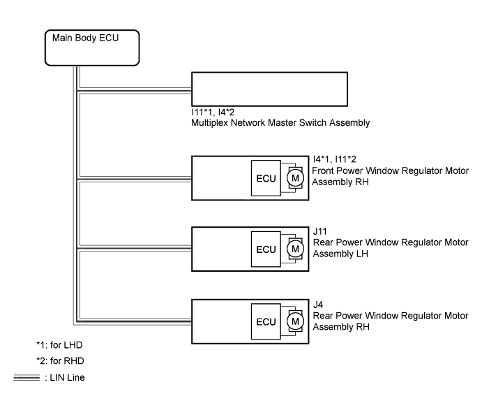
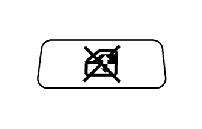

POWER WINDOW CONTROL SYSTEM > Remote Up / Down Function does not Operate |

| 1.CHECK LIN COMMUNICATION SYSTEM |
Check for LIN communication system DTCs related to the power window control system (Click here).
|
| ||||
| OK | |
| 2.CHECK MULTIPLEX NETWORK MASTER SWITCH ASSEMBLY (WINDOW LOCK SWITCH) |
 |
Turn the window lock switch off and operate the switches on the multiplex network master switch. Check that the remote up/down function operates (Click here).
|
| ||||
| OK | ||
| ||